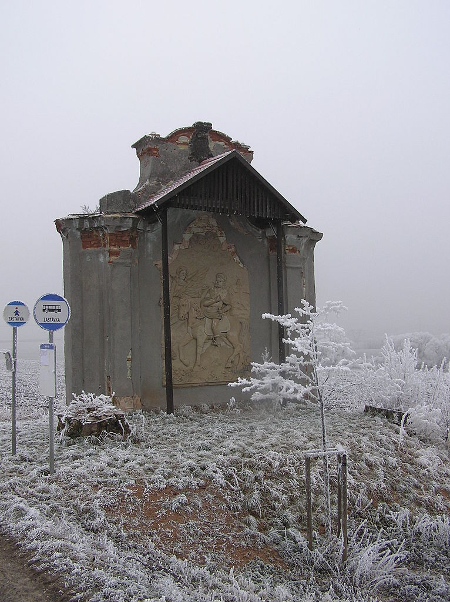

Blšany
Zpět na hlavní stránku
Kaple
Na návrší severně od obce pozůstatek kaple sv. Václava ze 17. stol. Údajně byla postavena na památku střetnutí družiny Viléma Zajíce z Valdeka se zásobovacími oddíly Jana Lucemburského, které se odehrálo r. 1318
